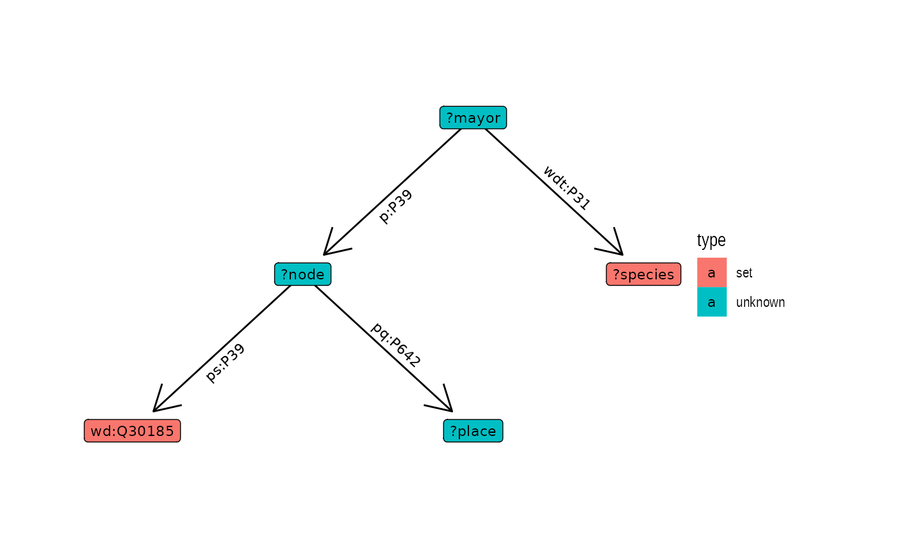
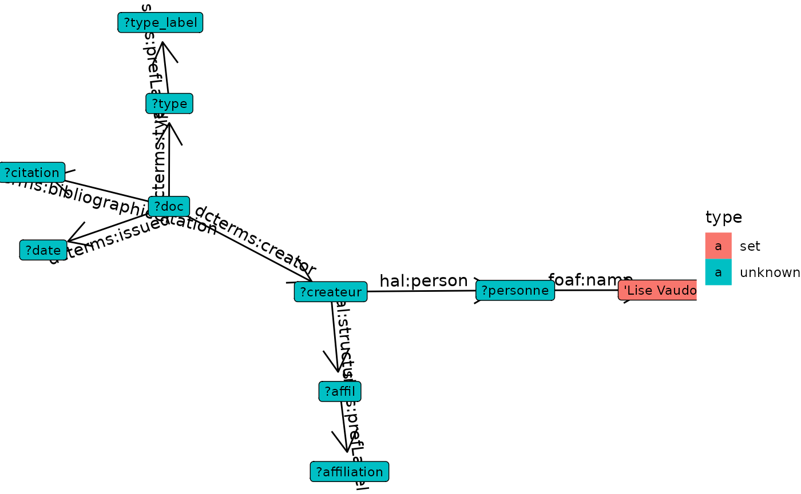

Get started
get-started.Rmdplot query as a graph
library(glitter)
#>
#> Attaching package: 'glitter'
#> The following object is masked from 'package:sequins':
#>
#> get_label
query=spq_init() %>%
spq_add("?mayor wdt:P31 ?species") %>%
# dog, cat or chicken
spq_set(species = c('wd:Q144','wd:Q146', 'wd:Q780')) %>%
# who occupy the function
spq_add("?mayor p:P39 ?node") %>%
# of mayor
spq_add("?node ps:P39 wd:Q30185") %>%
# of some places
spq_add("?node pq:P642 ?place")
graph_query(query, layout="tree", flip=TRUE)
Other examples
query=spq_init() %>%
spq_add("?doc dcterms:creator ?createur") %>%
spq_add("?createur hal:structure ?affil") %>%
spq_add("?createur hal:person ?personne") %>%
spq_add("?personne foaf:name 'Lise Vaudor'") %>%
spq_add("?affil skos:prefLabel ?affiliation") %>%
spq_add("?doc dcterms:type ?type") %>% # récupère le type de document
spq_add("?type skos:prefLabel ?type_label") %>% # étiquette le type de document
spq_filter(lang(type_label) == 'fr') %>% # ... en français
spq_add("?doc dcterms:bibliographicCitation ?citation") %>% # récupère la citation
spq_add("?doc dcterms:issued ?date")
graph_query(query, layout="tree")
graph_query(query, flip=TRUE, label=TRUE)